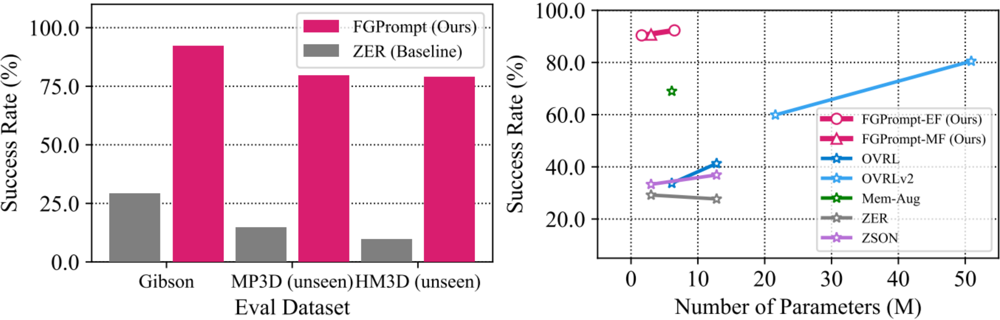

FGPrompt
📎 Fine-grained Goal Prompting for Image-goal Navigation 🤖
1South China University of Technology, 2Pazhou Laboratory
3Information Technology R&D Innovation Center of Peking University
4Peking University Shenzhen Graduate School
5Key Laboratory of Big Data and Intelligent Robot, Ministry of Education
NeurIPS 2023
TL;DR: Injecting fine-grained goal-prompting allows efficient embodied environmental perception.
Overview
We aim to tackle the image-goal navigation task, in which the agent is required to reason the goal location from where a picture is shot. Existing methods perform poor as: 1) they miss the detailed information in the goal image since they only consider the semantic level image features; 2) they failed to learn a observation encoder conditioned on the goal image. In this paper, we propose the Fine-grained Goal Prompting (FGPrompt) method for image-goal navigation. We leverage fine-grained and high-resolution feature maps in the goal image as prompts to perform conditioned embedding, which preserves detailed information in the goal image and guides the observation encoder to pay attention to goal-relevant regions. Compared with existing methods on the image-goal navigation benchmark, our method brings significant performance improvement on 3 benchmark datasets (i.e., Gibson, MP3D, and HM3D).
Main Results
Compared with existing methods on the image-goal navigation benchmark, our method brings significant performance improvement on 3 benchmark datasets (i.e., Gibson, MP3D, and HM3D). Especially on Gibson, we significantly outperform baselines by +209% and surpass the state-of-the-art success rate by a large margin with only 1/50 model size.
Proposed Method
We implement the goal prompting scheme as a fusion process between the goal and observation images and design a early fusion (FGPrompt-EF) and a mid fusion (FGPrompt-MF) mechanism. We also implement a heuristic skip fusion baseline to validate the effectiveness of the proposed learnable modules.
The Early Fusion mechanism is built upon a naive solution to exchange information in two images that directly concatenate them together in the channel dimension before input to the encoder.
The Mid Fusion mechanism is a more robust solution in comparison. It leverages fine-grained and high-resolution feature maps in the intermediate goal network layers as the prompts.
SOTA Comparison on ImageNav
Our proposed FGPrompt-MF and FGPrompt-EF methods take an absolute advantage compared with all previous methods, including end-to-end methods and memory graph-based methods. When transferred to the out-of-domain datasets, the FGPrompt-MF also brings 7× improvements in the success rate, indicating the generalization ability of our method.
How does goal-prompting works?
We visualize the intermediate feature maps of Mid Fusion and Early Fusion using EigenCAM. Prompted with the fine-grained and high-resolution activation map from the goal image, the agent is able to find out the relevant objects in the current observation and pay more attention to them, as shown in the activation visualization in the last column.
Robustness under dynamic camera parameter setting.
For a wider application scope, it is important for the image navigation agent to handle the situation where the goal camera shares different camera parameters with the agent's one. We augment the gibson ImageNav testing episodes using random camera height, pitch angle, and HFOV to initialize the goal camera. The mid-fusion mechanism performs the best in this scenario.
We further conduct experiments on the instance image navigation (iin) dataset. The episodes in this dataset cover a wide range of object instances in the environment and are much harder to finish. We train three agents on the HM3D ImageNav dataset and evaluate them on the test split of the iin dataset. The baseline agent performs poorly, but our mid-fusion still brings consistent improvement in this task.
Transfer to other embodied task.
FGPrompt is also applicable in other embodied task, for example, the visual rearrangement task. We conduct experiments on the 1-Phase track of the 2023 ai2thor-rearrangement challenge. See visualization video bellow:
With our FGPrompt, the agent performs much better than the baseline (with more than 400% improvement on the Success and FixedStrict metric). We believe it helps the agent to locate correspondent or inconsistent objects in the environment.
Citation
If you use this work or find it helpful, please consider citing: (bibtex)
@inproceedings{fgprompt2023,
author = {Xinyu, Sun and Peihao, Chen and Jugang, Fan and Thomas, H. Li and Jian, Chen and Mingkui, Tan},
title = {FGPrompt: Fine-grained Goal Prompting for Image-goal Navigation},
booktitle = {37th Conference on Neural Information Processing Systems (NeurIPS 2023)},
year = {2023},
}
Web Site Hit Counters